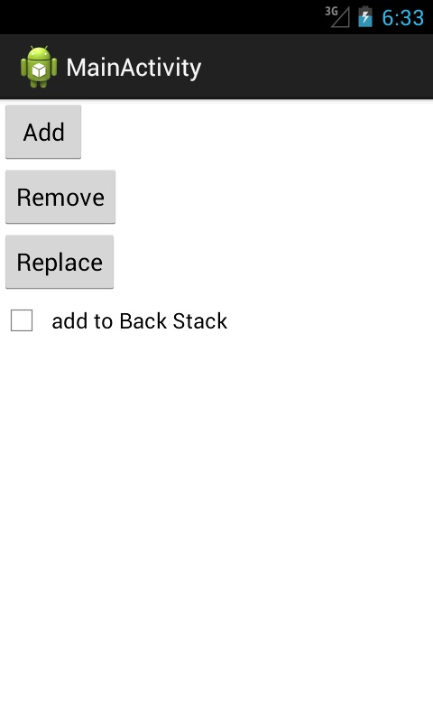
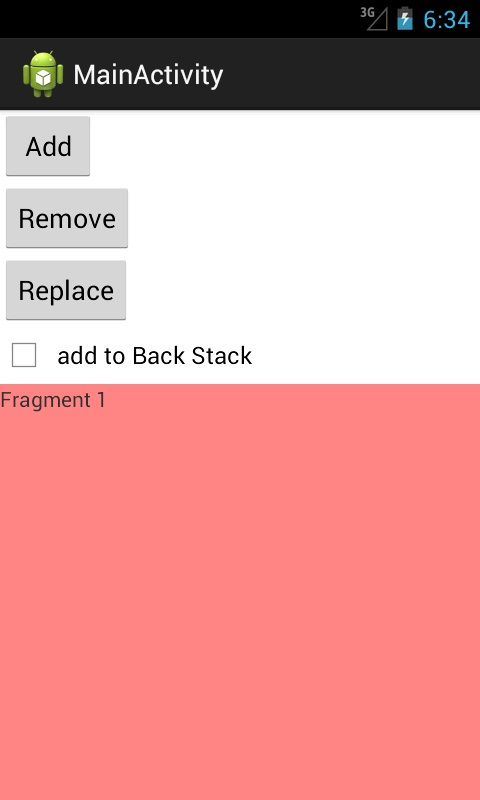
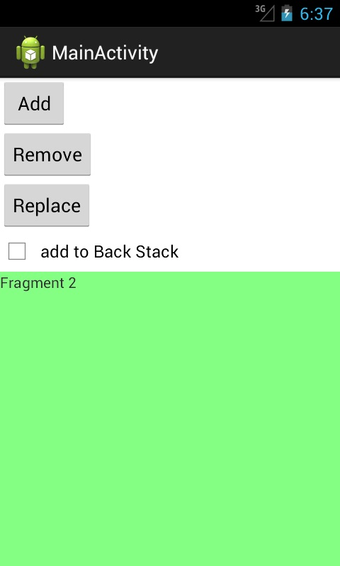
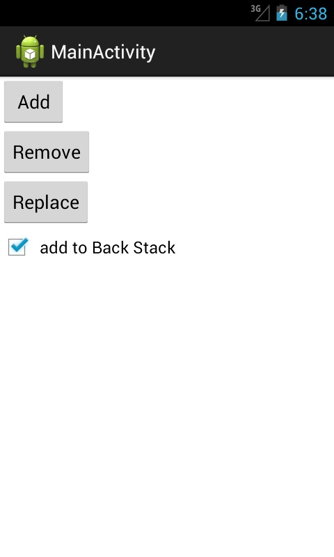

В этом уроке:
- динамически работаем с фрагментами
Размещать статические фрагменты мы уже умеем. Но, ясно дело, что гораздо интереснее работать с ними динамически. Система позволяет нам добавлять, удалять и заменять фрагменты друг другом. При этом мы можем сохранять все эти манипуляции в BackStack и кнопкой Назад отменять. В общем, все удобно и красиво.
Создадим простое приложение с двумя фрагментами, которое будет уметь:
- добавлять первый фрагмент
- удалять первый фрагмент
- заменять первый фрагмент вторым фрагментом
- переключать режим сохранения в BackStack операций с фрагментами
Создадим проект:
Project name: Lesson105
Package name: com.mycompany.myapp
Build Target: Android 4.1
Application name: FragmentDynamic
Create Activity: MainActivity
В strings.xml добавим строки:
<string name="frag1_text">Fragment 1</string>
<string name="frag2_text">Fragment 2</string>
<string name="add">Add</string>
<string name="remove">Remove</string>
<string name="replace">Replace</string>
<string name="stack">add to Back Stack</string>Создаем фрагменты. Как мы помним из прошлого урока, для этого нам нужны будут layout-файлы и классы, наследующие android.app.Fragment
fragment1.xml:
<?xml version="1.0" encoding="utf-8"?>
<LinearLayout
xmlns:android="http://schemas.android.com/apk/res/android"
android:layout_width="match_parent"
android:layout_height="match_parent"
android:background="#77ff0000"
android:orientation="vertical">
<TextView
android:layout_width="wrap_content"
android:layout_height="wrap_content"
android:text="@string/frag1_text">
</TextView>
</LinearLayout>fragment2.xml:
<?xml version="1.0" encoding="utf-8"?>
<LinearLayout
xmlns:android="http://schemas.android.com/apk/res/android"
android:layout_width="match_parent"
android:layout_height="match_parent"
android:background="#7700ff00"
android:orientation="vertical">
<TextView
android:layout_width="wrap_content"
android:layout_height="wrap_content"
android:text="@string/frag2_text">
</TextView>
</LinearLayout>Fragment1.java:
package ru.startandroid.develop.p1051fragmentdynamic;
import android.app.Fragment;
import android.os.Bundle;
import android.view.LayoutInflater;
import android.view.View;
import android.view.ViewGroup;
public class Fragment1 extends Fragment {
@Override
public View onCreateView(LayoutInflater inflater, ViewGroup container,
Bundle savedInstanceState) {
return inflater.inflate(R.layout.fragment1, null);
}
}Fragment2.java:
package ru.startandroid.develop.p1051fragmentdynamic;
import android.app.Fragment;
import android.os.Bundle;
import android.view.LayoutInflater;
import android.view.View;
import android.view.ViewGroup;
public class Fragment2 extends Fragment {
@Override
public View onCreateView(LayoutInflater inflater, ViewGroup container,
Bundle savedInstanceState) {
return inflater.inflate(R.layout.fragment2, null);
}
}Все почти аналогично прошлому уроку, только убрали вызовы кучи lifecycle методов с логами.
Рисуем основное Activity.
main.xml:
<?xml version="1.0" encoding="utf-8"?>
<LinearLayout
xmlns:android="http://schemas.android.com/apk/res/android"
xmlns:tools="http://schemas.android.com/tools"
android:id="@+id/LinearLayout1"
android:layout_width="match_parent"
android:layout_height="match_parent"
android:orientation="vertical">
<LinearLayout
android:layout_width="wrap_content"
android:layout_height="wrap_content"
android:orientation="vertical">
<Button
android:id="@+id/btnAdd"
android:layout_width="wrap_content"
android:layout_height="wrap_content"
android:onClick="onClick"
android:text="@string/add">
</Button>
<Button
android:id="@+id/btnRemove"
android:layout_width="wrap_content"
android:layout_height="wrap_content"
android:onClick="onClick"
android:text="@string/remove">
</Button>
<Button
android:id="@+id/btnReplace"
android:layout_width="wrap_content"
android:layout_height="wrap_content"
android:onClick="onClick"
android:text="@string/replace">
</Button>
<CheckBox
android:id="@+id/chbStack"
android:layout_width="wrap_content"
android:layout_height="wrap_content"
android:text="@string/stack">
</CheckBox>
</LinearLayout>
<FrameLayout
android:id="@+id/frgmCont"
android:layout_width="match_parent"
android:layout_height="match_parent">
</FrameLayout>
</LinearLayout>Три кнопки для добавления, удаления и замены фрагментов. Чекбокс для включения использования BackStack. И FrameLayout – это контейнер, в котором будет происходить вся работа с фрагментами. Он должен быть типа ViewGroup. А элементы Fragment, которые мы использовали на прошлом уроке для размещения фрагментов, нам не нужны для динамической работы.
MainActivity.java:
package ru.startandroid.develop.p1051fragmentdynamic;
import android.app.Activity;
import android.app.FragmentTransaction;
import android.os.Bundle;
import android.view.View;
import android.widget.CheckBox;
public class MainActivity extends Activity {
Fragment1 frag1;
Fragment2 frag2;
FragmentTransaction fTrans;
CheckBox chbStack;
@Override
public void onCreate(Bundle savedInstanceState) {
super.onCreate(savedInstanceState);
setContentView(R.layout.main);
frag1 = new Fragment1();
frag2 = new Fragment2();
chbStack = (CheckBox)findViewById(R.id.chbStack);
}
public void onClick(View v) {
fTrans = getFragmentManager().beginTransaction();
switch (v.getId()) {
case R.id.btnAdd:
fTrans.add(R.id.frgmCont, frag1);
break;
case R.id.btnRemove:
fTrans.remove(frag1);
break;
case R.id.btnReplace:
fTrans.replace(R.id.frgmCont, frag2);
default:
break;
}
if (chbStack.isChecked()) fTrans.addToBackStack(null);
fTrans.commit();
}
}В onCreate создаем пару фрагментов и находим чекбокс.
В onClick мы получаем менеджер фрагментов с помощью метода getFragmentManager. Этот объект является основным для работы с фрагментами. Далее, чтобы добавить/удалить/заменить фрагмент, нам необходимо использовать транзакции. Они аналогичны транзакциям в БД, где мы открываем транзакцию, производим операции с БД, выполняем commit. Здесь мы открываем транзакцию, производим операции с фрагментами (добавляем, удаляем, заменяем), выполняем commit.
Итак, мы получили FragmentManager и открыли транзакцию методом beginTransaction. Далее определяем, какая кнопка была нажата:
если Add, то вызываем метод add, в который передаем id контейнера (тот самый FrameLayout из main.xml) и объект фрагмента. В итоге, в контейнер будет помещен Fragment1
если Remove, то вызываем метод remove, в который передаем объект фрагмента, который хотим убрать. В итоге, фрагмент удалится с экрана.
если Replace, то вызываем метод replace, в который передаем id контейнера и объект фрагмента. В итоге, из контейнера удалится его текущий фрагмент (если он там есть) и добавится фрагмент, указанный нами.
Далее проверяем чекбокс. Если он включен, то добавляем транзакцию в BackStack. Для этого используем метод addToBackStack. На вход можно подать строку-тэг. Я передаю null.
Ну и вызываем commit, транзакция завершена.
Давайте смотреть, что получилось. Все сохраняем, запускаем приложение.

Жмем Add

появился первый фрагмент.
Жмем Remove
фрагмент удалился.
Еще раз добавим первый фрагмент – жмем Add. И жмем Replace

первый фрагмент заменился вторым.
Жмем кнопку Назад. Приложение закрылось, т.к. все эти операции с фрагментами не сохранялись в BackStack. Давайте используем эту возможность.
Снова запускаем приложение и включаем чекбокс add to Back Stack

Выполняем те же операции: Add, Remove, Add, Replace. У нас добавится первый фрагмент, удалится первый фрагмент, добавится первый фрагмент, заменится вторым. В итоге мы снова видим второй фрагмент. Теперь жмем несколько раз кнопку Назад и наблюдаем, как выполняются операции, обратные тем, что мы делали. Когда транзакции, сохраненные в стеке закончатся, кнопка Назад закроет приложение.
Т.е. все достаточно просто и понятно. Скажу еще про пару интересных моментов.
Я в этом примере выполнял всего одну операцию в каждой транзакции. Но, разумеется, их может быть больше.
Когда мы удаляем фрагмент и не добавляем транзакцию в BackStack, то фрагмент уничтожается. Если же транзакция добавляется в BackStack, то, при удалении, фрагмент не уничтожается (onDestroy не вызывается), а останавливается (onStop).
В качестве самостоятельной работы: попробуйте немного изменить приложение и добавлять в один контейнер сразу два фрагмента. Возможно, результат вас удивит )